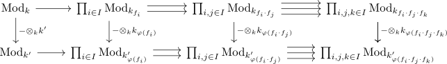

universally injective is a zariski local property
Proposition
Being a universally injective map $f: M \rightarrow N$ is a zariski-local property of modules.
Proof
a)
use associativity of a tensor product for commutative rings.
b)
Let $\varphi: k \rightarrow k'$ be a ring-homomorphism, then we need to show that $\varphi \otimes_{k} k'$ is also a monomorphism. Observe that there exists a diagram

and use that being an injective map is a zariski local property.